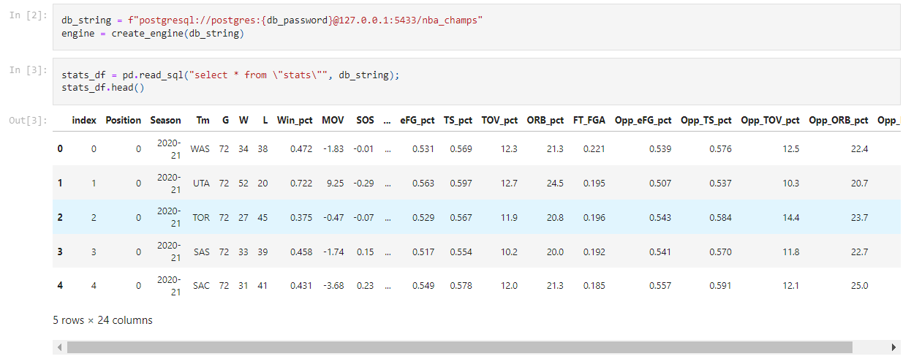
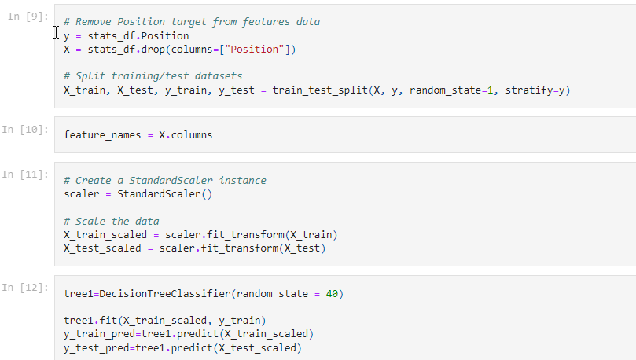
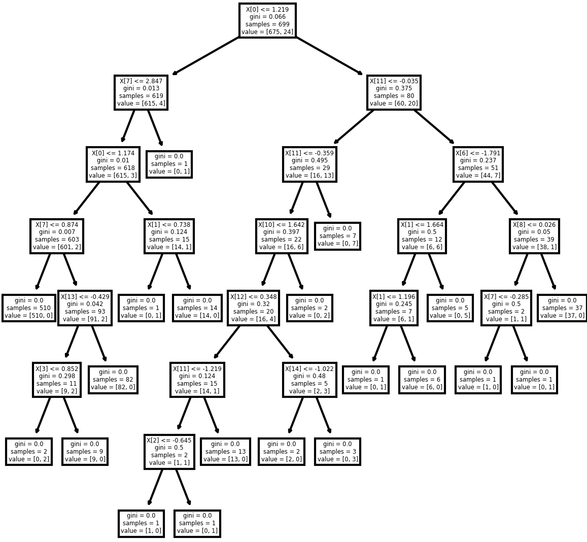
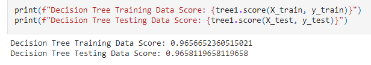

Decision Tree
Decision Tree is a supervised algorithm used in machine learning. It is using a binary tree graph (each node has two children) to assign for each data sample a target value. The target values are presented in the tree leaves. To reach the leaf, the sample is propagated through nodes, starting at the root node. In each node a decision is made, to which descendant node it should go. A decision is made based on the selected sample’s feature. Decision tree learning is a process of finding the optimal rules in each internal tree node according to the selected metric.
After cleaning is done to the datasets, they are both inserted into a PostgreSQL database. From there, we import them into our Model for training.
Unneeded features are dropped from the data sets. Since we are using 'Position' feature as our Binary target for this model, we assign 'Position' to the y variable. All other features are assigned to variable X. The data is them split into 4 groups. X_train, X_test, y_train, and y_test. These will be used to train and test the models accuracy. X_train and X_test are then scaled to normalize the data.
Our model is then created as 'tree1' and the training data is passed through. The model passes the features through the node and then through each leaf, making a decision to assign it to one or the other binary values. It 'learns' what values are more associated with the target along the way.

We will then score the data by passing the test sets through the model. This shows that by training our model with X_train and y_train, it is 96.58% accurate at choosing which binary outcome of feature 'Position' is determined. 
The importance that the model has assigned to each feature can be charted out. This gives us a good idea of which features heavily influence the models prediction.
 Features that hold no importance in helping the model decide are dropped and the model is ran again to verify accuracy did not decrease. In our case, the bottom 11 features were able to be dropped without decreasing the accuracy of the model. We then pass through the current year stats through the trained decision tree model and predict the outcome. As with the Logistic Regression model, the prediction outcome array is set into a dataframe and then joined back with the name dataframe, to reveal the winners predicted.
Features that hold no importance in helping the model decide are dropped and the model is ran again to verify accuracy did not decrease. In our case, the bottom 11 features were able to be dropped without decreasing the accuracy of the model. We then pass through the current year stats through the trained decision tree model and predict the outcome. As with the Logistic Regression model, the prediction outcome array is set into a dataframe and then joined back with the name dataframe, to reveal the winners predicted.